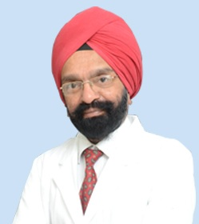

|
Doctor's Profile
Dr AJ Kanwar, M.B.B.S, M.D. (AIIMS Dermatology)
- Consultant Dermatologist, Venereologist & Cosmetologist
- National Award Winner Dr. AJ Kanwar is the best and a renowned dermatologists of national and international fame. He graduated (MBBS) from All India Institute of Medical Sciences (AIIMS, New Delhi) in 1969.
- Also a post graduate (MD) from AIIMS, New Delhi , Dr. AJ Kanwar went on a teaching assignment to Benghazi, Libya, from 1977 to 1987 and on his return joined Department of Dermatology at PGI, Chandigarh as an Associate Professor, Department of Dermatology (Skin Specialist).
- In 1995, he went on a Common Wealth Medical Fellowship to St. John's Institute of Dermatology and on his return, joined the department of Dermatology and Venereology at Government Medical College, Sector 32, Chandigarh as Professor & Head, Department of Dermatology (Skin) for six years.
- Besides being the life member of Indian Association of Dermatologists, Venereologists and Leprologists (IADVL), Prof Kanwar is a member of Pediatric society of dermatology, USA, and is on the editorial board of Pediatric Dermatology and Annals of Dermatology, South Korea. He is also the reviewer for clinical and experimental dermatology, British journal of dermatology and pediatric dermatology.
- Winner of Dr B.C. Roy National Award given by President of India in 2016 (Pranab Mukherjee) - The Highest Honor Given to People in the Field of Medicine
- Awarded with Dr RV Rajam Oration (2013-2014 Annual Meeting of National Academy of Medical Science)
- Received ICMR Lala Ram Chand Kandhari Award-2010 for his work on therapy and other aspects of vitiligo.
- Expert/Specialist in management of Acne, Pemphigus, Vitiligo, Atopic Eczema, Psoriasis and other skin diseases
- Author of more than 580 publications in various national and international skin and skin-related journals and textbooks of Dermatology
- STD Specialist and Leprologist, Invited speaker at countless International conferences,
Past Vice President and life member of IADVL,
Organizing Secretary of Dermacon - 2008,
Co-author of Textbook of Surgical Management of Vitiligo published by Blackwell,
Member of Pediatric Society of Dermatology, USA,
On the editorial board of Pediatric Dermatology and ANNALS of Dermatology, South Korea,
Reviewer for clinical and >experimental dermatology, British journal of dermatology and pediatric dermatology.
Currently
- Director - Dr AJ Kanwar Skin Clinic, New Delhi
- Director, Jaypee Hospital, Sector 128, Noida
Formerly
- Head of Deparment of Dermatology, Venerology and Leprology - PGI, Chandigarh
Evidently, because of association/interaction with various reputed hospitals, Dr AJ Kanwar has vast experience of seeing all kind of patients including the international ones - being a proficient Dermatologist at AIIMS, and PGI Hospital. Apart from managing Pediatric Dermatology and Pregnancy related skin disorders during his experience, he has keen interest in Cosmetic and Aesthetic Dermatology and Laser Surgery. He effectively disseminates awareness about the facts/myths relating to skin disorders through interviews on TV, radio and print media etc.
|
|
|